Non-playable characters - is a main game unit which building the game process: there are enemies, friends, items, power-ups, sceneries, etc. Each NPC have it's algorithm, and can be programmed.
Placing of NPC's
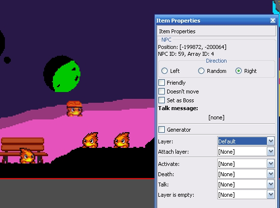
Context menu of NPC

Each NPC have switches and flags:
Default direction - NPC will start it's movement with defined direction. Direction option can have other name and values, for example, name "Activation state" and values "On"/"Off", etc. Dependent to the algorithm and global settings.
Friendly - NPC won't communicate with playable chatacters and with other NPC's. Friendly NPC's can'e be killed, can't hurt player, can't be taken or grabbed. Playable characters and other NPC's can't stay on top of the friendly NPCs.
Not movable - NPC will be idle irrespective of its algorithm.
Set as boss - (inside of SMBX this
option calling as "Legacy Boss") This is a special flag which automatically
enable special events for some bosses which supports them. For example: if NPC
have the activated "Boss" flag, will be changed background music to the boss's own theme and
when boss will be defeat, will be spawned a special bonus item or game will
be completed.
Talk message - The message which will be displayed when player will try to talk with this NPC. After displaying of this message will be activated event slot.
Generator - Making NPC generator. From the one point will be spawned new NPC's every each defined time delay.
Generator type - Warp - NPC will be smoothly warped. Projectile - NPC will be appeared by sharply shoot.
Generator direction - defining the direction of spawn of NPC
Message box editing
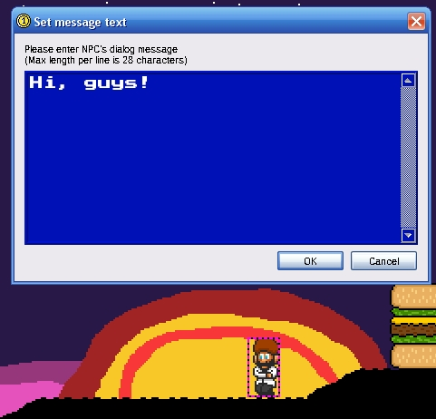
Note: Don't forget: all new-line characters will not work correctly with SMBX. Use the extra-spaces to make a pseudo-new-line.
Some NPCs can have a special values:
Contents - this option have an ID of other NPC which included into this NPC. Available for NPCs which marker as "containers".
Spin box with numeric value - Some NPCs can have the numeric special value, for example, position of firebar segment.
Special combo-box - some NPCs can have switchable algorithms which cab set individual NPCs algorithm from the list.
Layer - here is defined the layer which is an owner of this NPC. All items at first are a members of the "Default" layer.
Attach layer - This is a special option: all membered statical items of attached layer will move together with this NPC.
Each NPC have the event slots:
Activate - This slot activating then NPC will appear on the player's visible zone.
Death - This slot activating then NPC will be defeat, destroyed, kicked or taked (coins, power-ups, etc).
Talk - This slot activating them player was talked with this NPC.
Layer is empty - (In SMBX this option named as "No more objects in layer") this slot activating when activated the "Death" slot and when on the same layer which is an owner if this NPC no more another objects.
NPC Properties toolbox: Generator, NPC-Container, NPC-Container with spin box special value
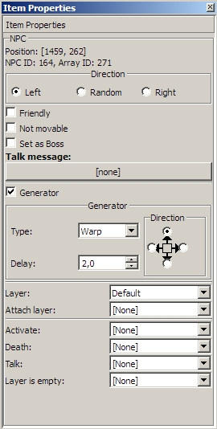 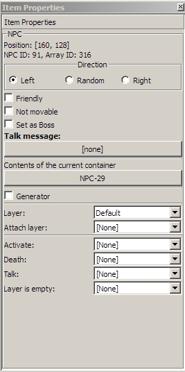 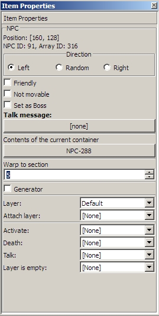
All, who working with SMBX, know the "Egg", "Buried", "Bubble" and "Lakuti" flags. These flags packing selected item into the special NPC which calling as Container. Container can have included into them NPC's which can be extracted when container will be destroyed, or will be spawned by container before it will destroyed.
In the SMBX we are pressing the "Bubble=Yes" or "Buried=Yes" to place "Packed into the herb" or "Packet into the bubble" NPC.
In PGE-Editor you can edit Containers. And therefore, for example, Herb will be more useful in the SMB2 group, because "The Lakutus are throwing Lakitus!" in the SMBX - is a secret tab which need for a lot of actions to open them. Even in the PGE-Editor same "tab" is a non-secret "group". To place "burred" items, we should select "herb" item and set its content before we will place them or you can set contents to already placed items by editing it's properties. In the PGE secrets are absence - all Free and Open Source!
If we will pick up any NPC from the "Containers" cathegory and they will be placed to the map with empty contents:
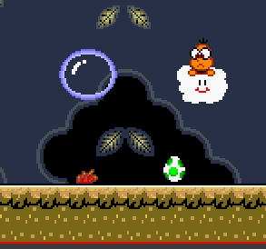
But how to place them with contents?
For already placed containers we can select alone or a group of NPC-Containers and
open "Properties" item of context menu:
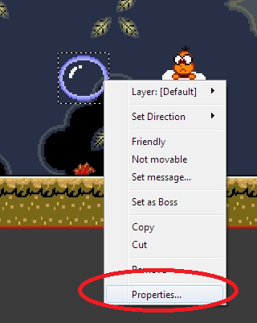
Now we should click to the "[empty]" button to select target NPC as "content" of this container(s):
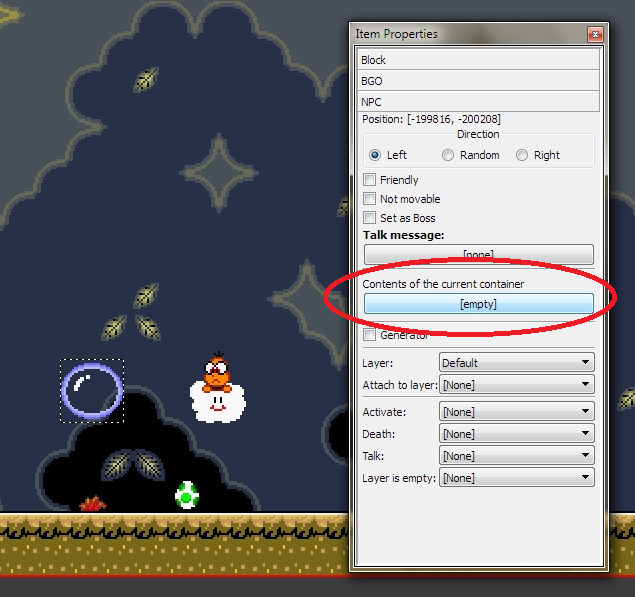
Here you can select necessary NPC which will be included into our container(s):
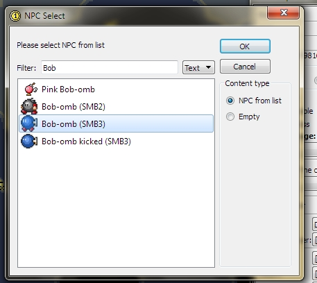
Done, now Bubble have gold key as content: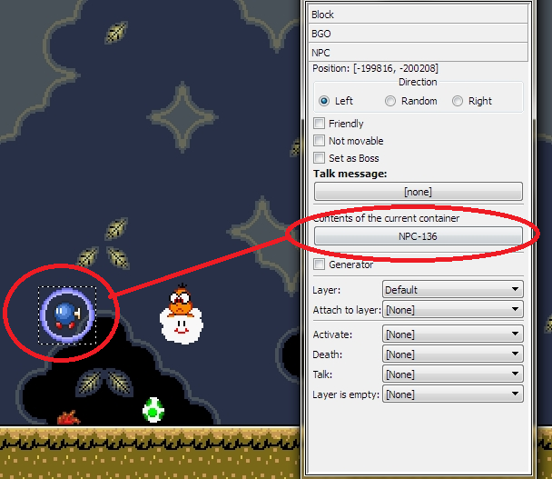
Same operations to set Lakitu's bullets:
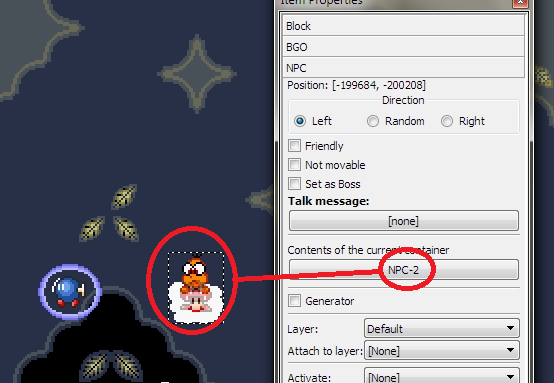
And same to set content of egg:
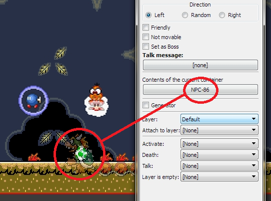
But how to place
container with already included content?
1) Take necessary NPC from the item toolbox:
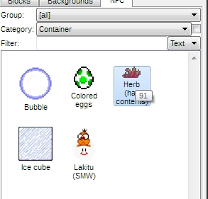
2) Set in the opened Properties window contents of NPC and after place them to the map:
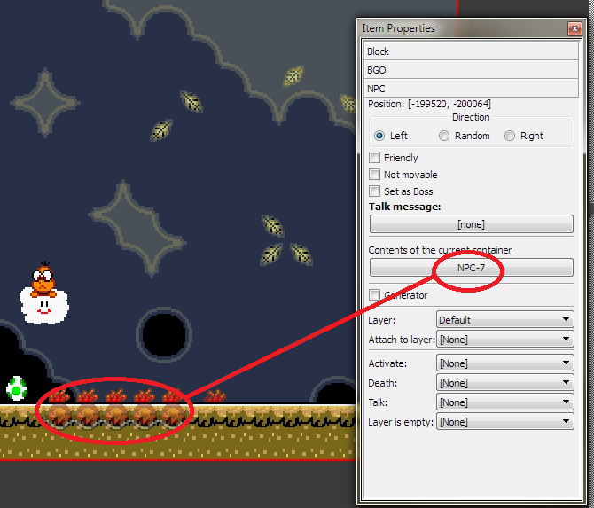
Generator flag in the Properties dialog will make generator (or respawning point) of selected NPC
NPC will be appeared every time deleay by two methods: warp and projectile.
Warp - NPC will be appeared smoothy and will start it's movement on appear.
Projectile - NPC will be sharply shooted from generator.
In SMBX Editor generators haven't markers. In PGE Editor each generator have his marker as generator direction arrow:
Generator types
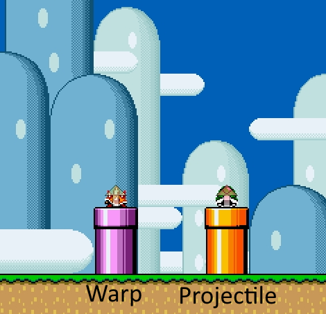
Generators in action
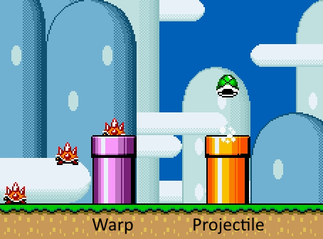
Copyright © 2014 Platformer Game Engine by Wohlstand project. All rights reserved.